Key Metrics
The Problem
Small teams need a task manager that scales to zero, requires no server maintenance, and can be redeployed reproducibly across environments.
Click-ops infrastructure and manual frontend deploys make that fragile — every environment drifts and every release becomes a special event.
Architecture
Hover or tap any component to see details

Approach & Implementation
- Serverless API: API Gateway routes to Lambda functions that implement task CRUD against DynamoDB with single-table-style access patterns.
- Global frontend: the React app builds to static assets hosted on S3 and distributed through CloudFront.
- CDK infrastructure: TypeScript CDK stacks define the API, tables, buckets, distributions, and IAM permissions as versioned code.
- CI/CD pipeline: CodePipeline with CodeBuild stages builds, tests, and deploys backend and frontend changes automatically.
- Observability: CloudWatch logs, metrics, and alarms cover Lambda invocations, API errors, and pipeline health; Docker supports local parity.
Challenges & Solutions
Challenge: Environment drift from manual setup
Hand-built resources diverge between dev and prod, making deployments unpredictable.
Solution: Everything in CDK
TypeScript CDK stacks declare all infrastructure so environments are synthesized and deployed from the same reviewed code.
Challenge: Coordinating frontend + backend releases
API changes and static-site deploys can easily ship out of sync.
Solution: Single CodePipeline flow
CodePipeline and CodeBuild stages sequence backend deployment before the S3 + CloudFront frontend publish, keeping releases atomic and traceable.
Outcome
The task manager runs fully serverless with IaC-defined infrastructure, automated CI/CD, and CloudWatch observability.
The pattern generalizes to other small data and internal tools that need low-ops AWS hosting with reproducible environments.